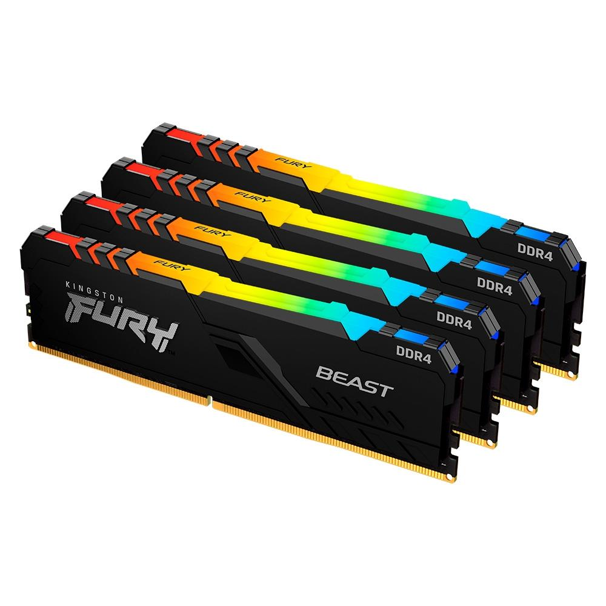

Memória RAM
PARA ESCOLHER A MELHOR MEMÓRIA RAM DEVEMOS PRESTAR ATENÇÃO NAS SEGUINTES INFORMAÇÕES:
Compatibilidade:
Antes de comprar um pente de memória RAM, cheque a compatibilidade com a placa-mãe e com o processador, pois existem diferentes modelos de memória RAM e nem todos são aceitos.Computador desktop ou notebook:
A memória RAM utilizada em um computador desktop é diferente da utilizada em um notebook. A principal diferença é o design menor apresentado em um pente de memória RAM utilizado em um computador portátil. Outra diferença é a velocidade de RAM que o computador suporta.Tipo de memória RAM:
Existem diferentes padrões de memória RAM: DDR, DDR2, DDR3 e DDR4. Cada modelo de computador aceita apenas um modelo de memória RAM.Frequência:
A frequência de um pente de memória RAM determina a velocidade de transferência de dados entre a memória RAM e o processador. Naturalmente, quanto maior a frequência, melhor o desempenho do computador. Mas a frequência da memória RAM deve ser compatível com o computador, pois quando existe incompatibilidade, o desempenho esperado não será alcançado.Single channel ou dual channel:
Ao utilizar dois pentes de memória ao invés de um, o processador consegue executar os comandos mais rapidamente, mesmo que a quantidade seja igual.Capacidade:
Ela é medida em gigabytes (GB) e diz quantos arquivos o modelo pode armazenar ao mesmo tempo;4 GB de memória:opção mais básica hoje;
8 GB de memória:considerada como a memória RAM intermediária;
16 GB de memória:Para jogos pesados e edições complexas de vídeo ou modelagem em 3D;
32 GB de memória: indicado para gamers profissionais e para quem faz edições 3D mais como hobby do que como profissão;
64 GB de memória:destinada para usuários como designers profissionais.
Clock de memória ou frequência:
É medido em megahertz (MHz) e refere-se à velocidade de processamento dos dados;PRODUTOS
Memória Kingston Fury Beast, RGB, 64GB (4x16GB), 3200MHz, DDR4, CL16, Preto - KF432C16BB1AK4/64
A Vista: R$ 1.499,99
A Prazo: R$ 1.764,69 Em até 10x de R$ 176,46 sem juros no cartão Ou em 1x no cartão com até 10% OFF
Memória Gamer Husky Gaming Avalanche, 16GB, 3200MHz, DDR4, CL19, Preto - HGMF008

A Vista: R$ 349,99
A Prazo: R$ R$ 411,75 Em até 10x de R$ 41,17 sem juros no cartão Ou em 1x no cartão com até 10% OFF
Memória Gamer Husky Gaming Avalanche, 8GB, 3200MHz, DDR4, CL19, Preto - HGMF007

A Vista: R$ 179,99
A Prazo: R$ 211,75 Em até 8x de R$ 26,46 sem juros no cartão Ou em 1x no cartão com até 10% OFF

anuncio